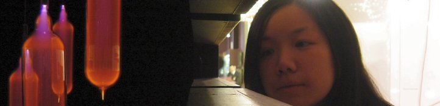

Here's another picture of me not looking like me taken by Andy at a lighting exhibition at the V & A. The gas lamps on the left really stole the show!
The enchanted world of Hanneke Dikboom. She is an artist but we collaborate through music with a Andreas and Stefan in a free improv band called HASH. We will be performing soon at the glazen huis in Amstel Park on Saturday 28 September 2012.
The jazz band with no name.. in collaboration with Giel Vleggaar, Arthur van Schendel, Carlo Balestreri, and Kees de Groot.
Here's a link to a band I recorded with last year called Fulborn Teversham. I have to thank Seb here for writing a song that inspired one of the pictures below.
Here's a link to one of my musical collaborators...electro-acoustic composition with live improvisation.
Here's another link to one of my musical collaborators...a crazy Brazilian violinist!
For those who want to reminisce, the old ICCMC web pages are here...
Here's a recording of a gig with the free improv band Collision. It is 7.3 Mb big and its just an extract.
Pictures
Here are some of my sketches -in cronological order. If you wish to save these to your disk permanently, please ask me first...feedback is always nice.:
Here's an essay on Mark Rothko and the Rothko Chapel compositions by Morton Feldman and Steve Reich. I was fortunate enough, recently to ask Steve Reich a question after a lecture he gave at the Guildhall School of Music. I asked him if he was influenced by the work of Feldman and Rothko when he was commissioned to write Tehillim. He said that the commission was actually funded by a few organisations and was not directly linked with Rothko or Feldman. So there is the answer to the ponderings in my essay...
Origami
here's a link to a film that i helped contribute some origami for. Sadly, my origami models were not needed in the end but the film is great!